Tassie Pickies
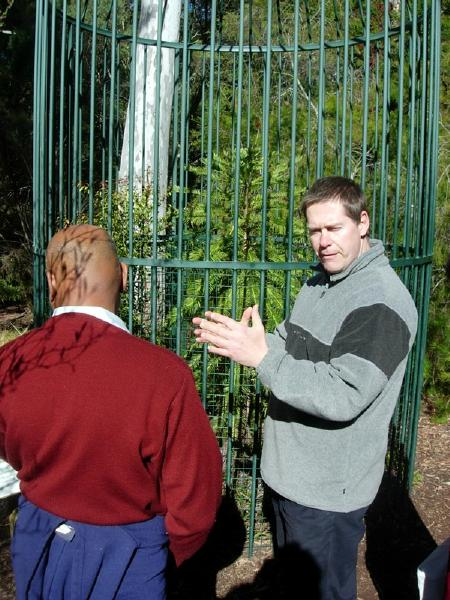
Tasmania is the Rodney Daingerfield of Oz. (When drawing a map of Australia in the dirt at Uluru, the tour guide commented, "Yes, we have to include Tasmania." It's kinda like West Virginia.") I may not make it to Tazzie, but got some primo piccies from a Tasmanian friend Arlo (facing camera). The Wollomi Pine in the cage was throught to be a fossil only until found by hiker in 90s NW of Sydney . It's now being preserved by being turned into a backyard plant.
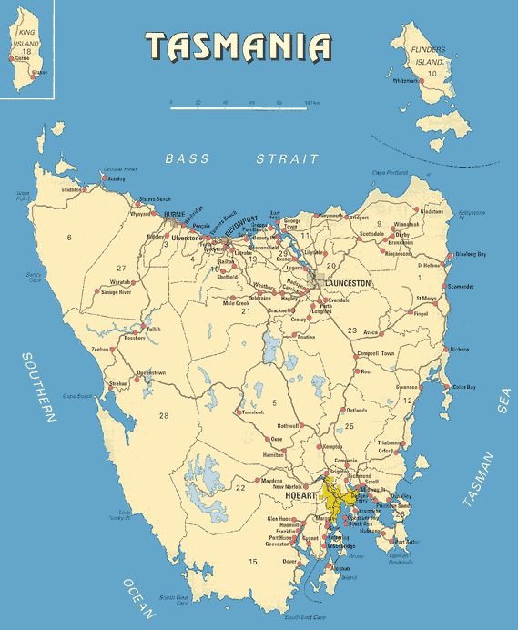
Here's a handy reference map.
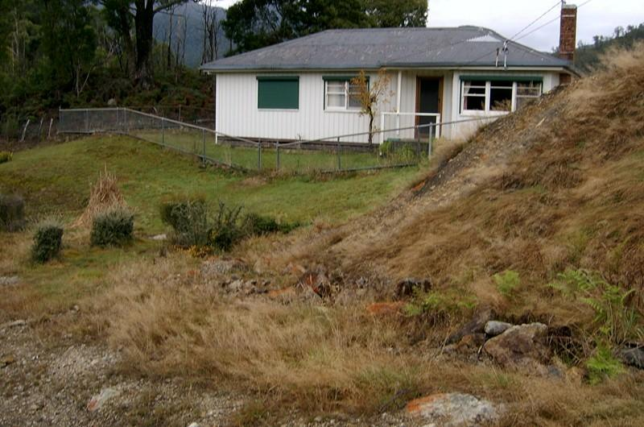
This is Arlo's dacha in Rosebury (central west coast).
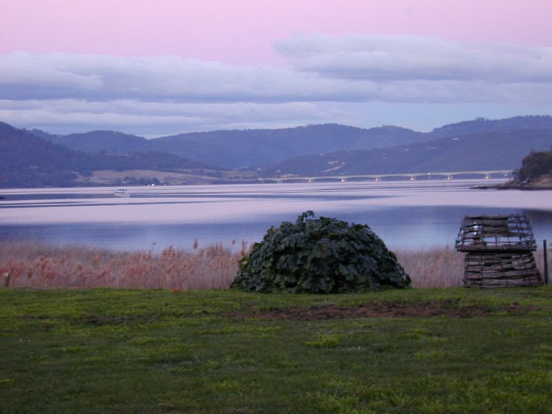
Arlo's friend Brett's back yars along the River Derwent in Hobard. Bowen bridge in the background. There used by to a Cadbury factory nearby.
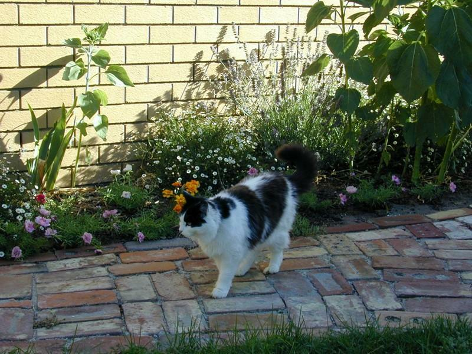
Brett's cat. Tasmania's a bad place to be if you can't handle rain. The fishing probably makes up for it.
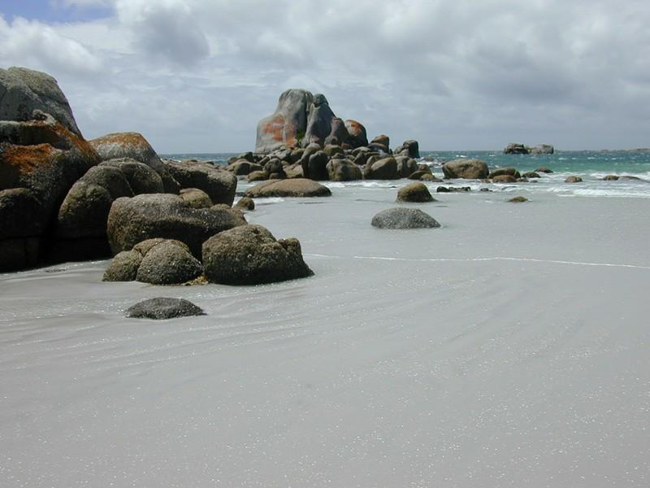
Anson's Bay, on the northeast point. Since the weather comes up from in easterlies from the south pole, this side of the mountain is much drier, and is a summer holiday spot.
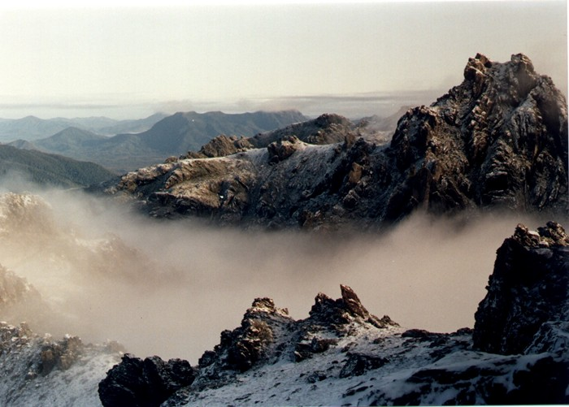
Arthur's Range, in the national park in the southwestern end.
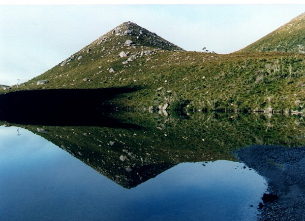
Same park.
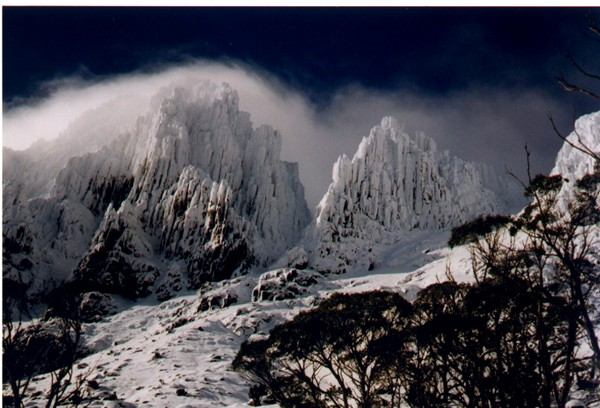
Arthur's Range
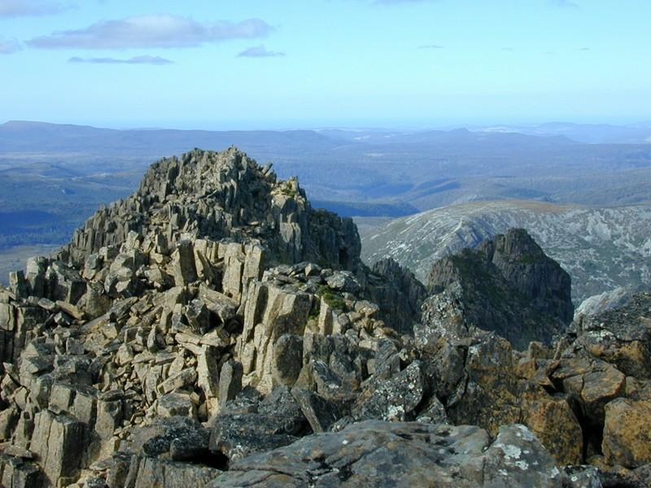
Mt. Wellington (over Hobart)
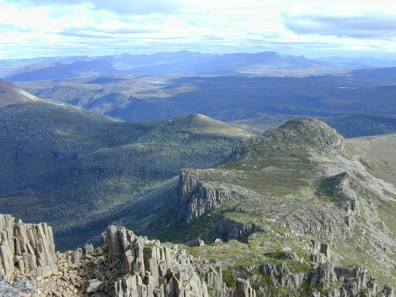
Mt. Wellington area
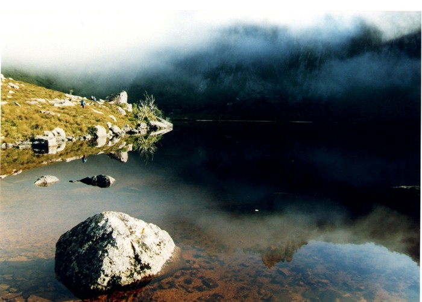
Somewhere along the west coast
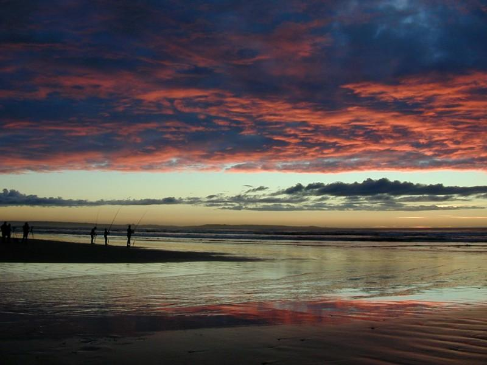
Ocean Beach (near Strahan)
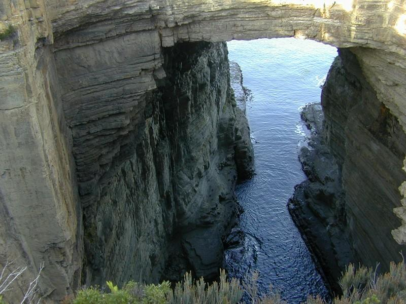
Tasman Penninsula (southeast corner)
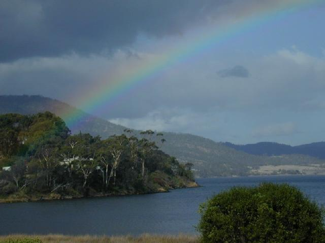
Clairmont (near Hobart)
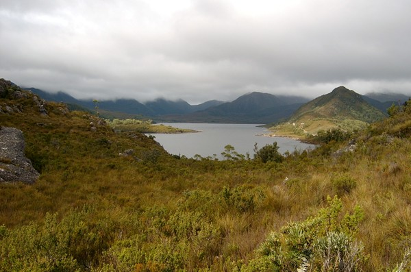
Rosebury, Lake Plimsoll